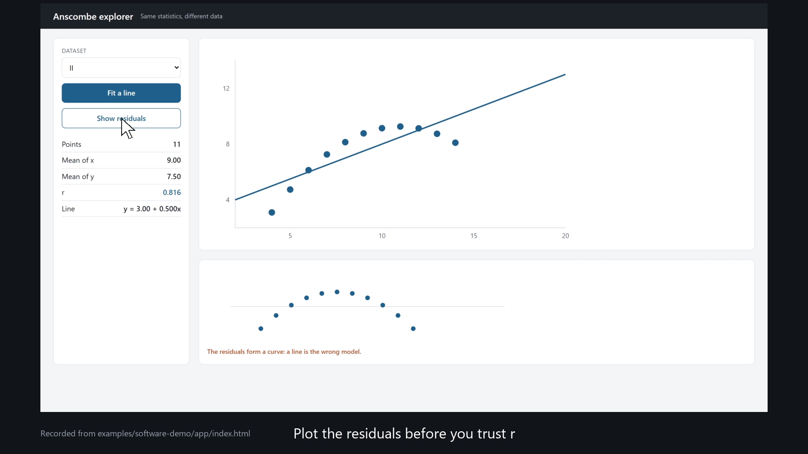

A demo recorded from the real dashboard, not drawn
presentation-kit · software demo example · 2026

Recorded with «kit.py demo» from app/index.html (demo.yml). Data: Anscombe (1973), The American Statistician 27(1), 17–21.
mockup: true stamps «Mock-up» on every frame.presentation-kit: engine/demo.py.